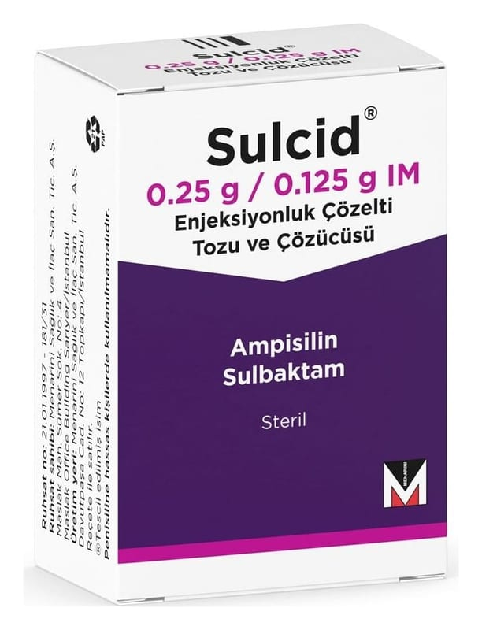

Sulcid 0.25 g/0.125 g IM Enjeksiyonluk Çözelti Tozu ve Çözücüsü

Ne için kullanılır
KT · Bölüm 1SULCİD penisilin antibiyotikleri adı verilen ilaç grubuna aittir. Ampisilin ve sulbaktam isimli aktif maddenin bileşimidir. Sulbaktam penisiline dirençli bakterilere karşı etkinlikte ampisiline yardım eder.
SULCİD enjeksiyon için beyaz ile krem renkte toz içeren 1 flakonda sunulmaktadır.
SULCİD duyarlı mikroorganizmaların neden olduğu sinüzit (yüz kemiklerinin içindeki hava boşluklarının iltihabı), otitis media (orta kulak iltihabı), epiglottit (nefes borusu kapakçığı iltihabı), pnömoni (akciğer iltihabı) dahil üst ve alt solunum yolu enfeksiyonları; idrar yolu enfeksiyonları ve piyelonefrit (idrar yolları ve böbrekte gelişen iltihap); peritonit (karın zarı iltihabı), kolesistit (safra kesesi iltihabı), endometrit (rahim iç tabakasının iltihabı) ve pelvik selülit dahil intraabdominal (karın içi) enfeksiyonlar; bakteriyel septisemi (bakterilerin kana geçmesi sonucunda ateş ve titremeye neden olan hastalık); deri yumuşak doku, kemik ve eklem enfeksiyonları ve gonokok (bel soğukluğuna neden olan mikroorganizma) enfeksiyonlarının tedavisinde kullanılır.
SULCİD abdominal (karın) veya pelvik (kadınlarda iç cinsiyet organlarının yer aldığı bölge) cerrahi müdahale yapılan ve periton kontaminasyonu (karın zarının iltihaplanması) ihtimali olan hastalarda ameliyat sonrası yara enfeksiyon olasılığını azaltmak amacıyla ameliyat öncesinde de kullanılabilir. SULCİD, gebeliğin sonlandırılması veya sezaryen ameliyatı sonrası iltihabik durumu azaltmak amacıyla korunma için kullanılabilir.